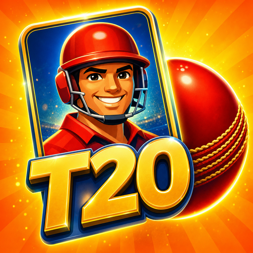
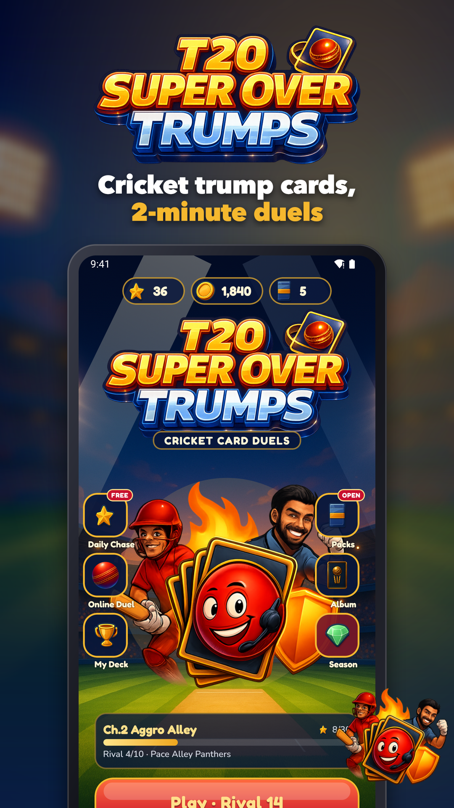
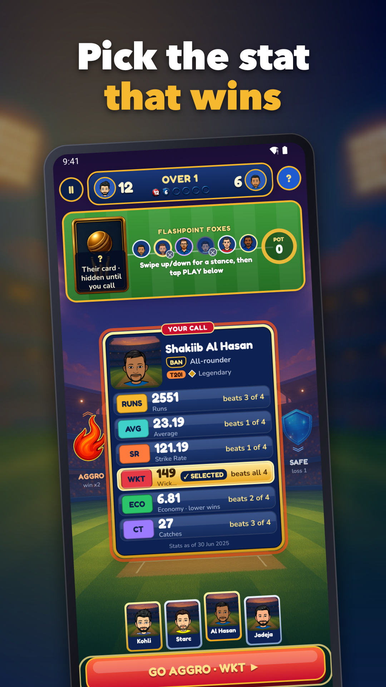
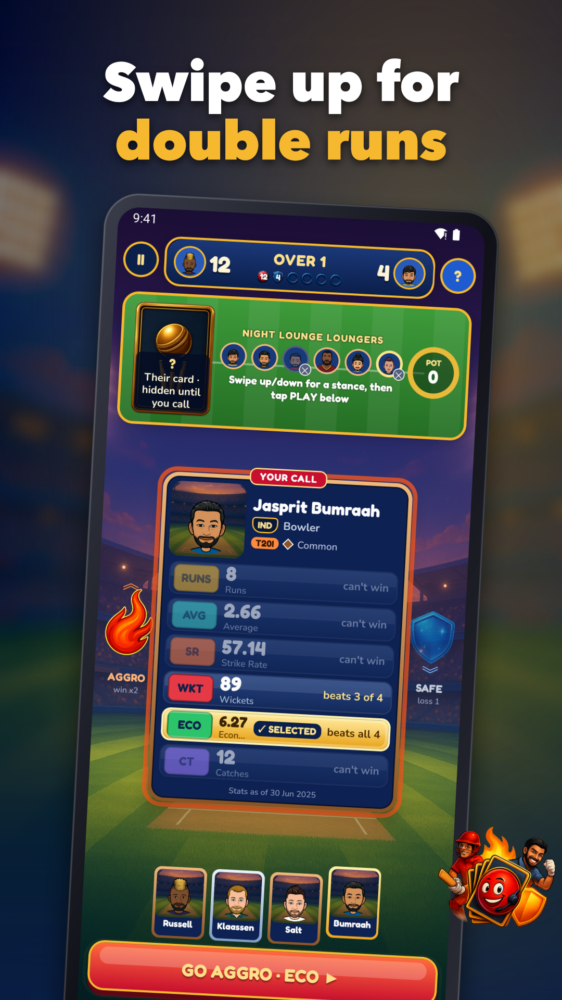
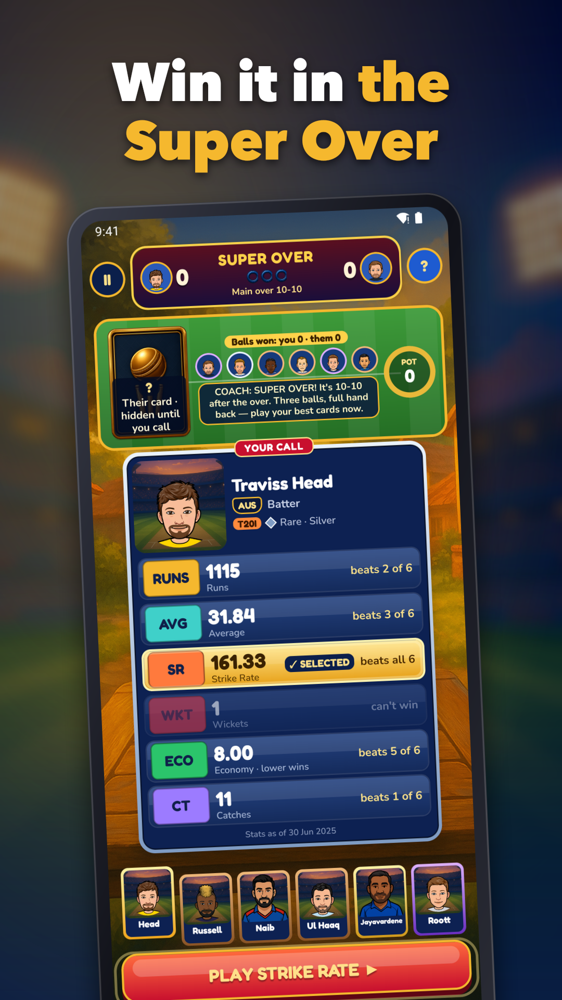
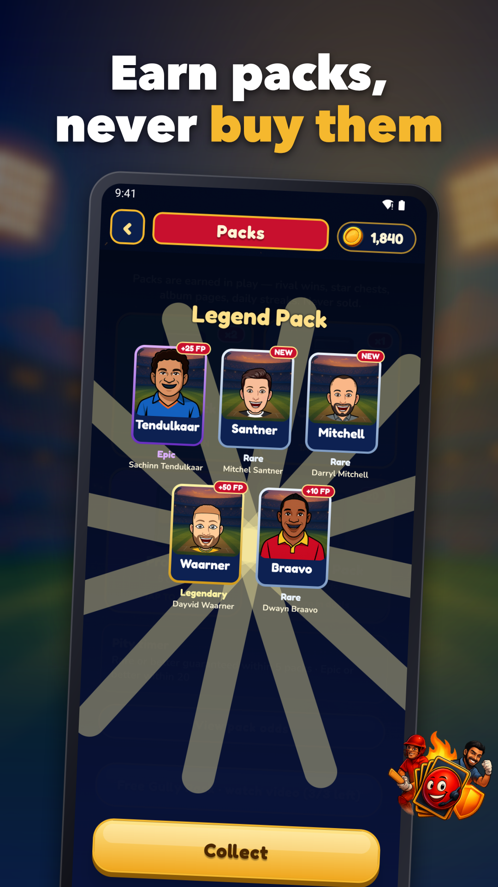
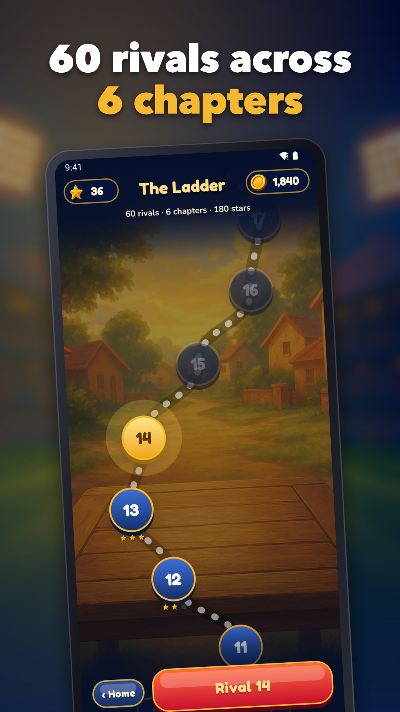

Cricket Card Game
Cricket card game with 2-minute trump duels. Pick the best stat, win the over!






Settle every cricket argument with this cricket card game built around quick stat duels. Read the card, pick the stat you trust, and win the over in about two minutes.
HOW A DUEL WORKS
Each duel is one over of 6 balls. Choose a stat on your cricketer card: Runs, Average, Strike Rate, Wickets, Economy or Catches. The higher value wins the ball, and the margin decides whether you score 1, 2, 3, 4 or 6. Tied stats go into a pot for the next ball. If the over ends level, a 3-ball Super Over decides it.
RISK OR REWARD
• Go Aggressive: win double runs, but a loss hands your rival extra runs and costs you a wicket
• Play Safe: cap your gains, but limit the damage
• Power cards: Free Hit, Review and Powerplay, one use each per duel
• Wildcard stat swap to turn a lost ball around
60 LEVELS ACROSS 6 CHAPTERS
Climb a ladder of 60 handcrafted rival duels, from sunlit Gully Greens to the Grand Super Series. Every chapter adds new rules: stances, power cards, T20, ODI and Test format weights, Captain bonus, Fog of War, Mega Pots and boss duels. Earn up to 3 stars on every level.
COLLECT CRICKETER CARDS
• 121 cartoon cricketer cards with career stats from T20I, ODI and Test cricket
• Every card shows a "stats as of" date
• Earn packs by playing, with the odds shown openly
• Build your deck and pick your captain
PLAY ONLINE OR OFFLINE
Challenge friends in private rooms or play live against other players in this online cricket card game. Prefer solo? The ladder works offline. No account or login is needed, and your progress is saved on your device.
KEEP COMING BACK
• Daily challenge and streaks
• Leaderboards
• Coins to spend on cosmetic themes
• Hints, colour-blind mode, sound and haptics settings
• Rewarded ads only when you choose to watch them, and a Remove Ads purchase
One-hand touch controls make every duel easy to learn and hard to master. If you like a cricket trump card game with real tactics, tap a stat and play your first over today.
Stats are compiled from public records. This game is not affiliated with any league, board or team, and uses cartoon avatars with altered names.
Support: jeets98e@gmail.com